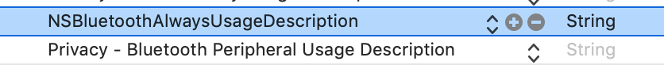
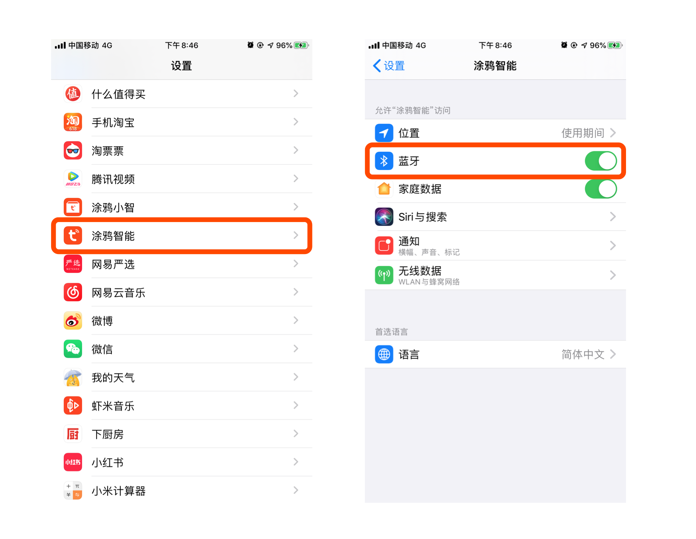

1. iOS 版本适配
1.1. iOS 14 适配
从 iOS 14 开始，在设备配网、局域网本地控制时会触发「本地网络」权限弹窗，在用户点击允许后，app才能够向本地局域网发送数据。如果用户点击了拒绝，将无法使用相关功能。目前苹果没有提供任何 API 对此权限进行判断，建议开发者在相关功能无法正常使用时提示、引导用户检查「系统设置 - app设置」，确认是否开启了「本地网络」权限。
1.2. iOS 13 适配
1.2.1. Wi-Fi 权限变化
从 iOS 13 开始，如果没有开启地理位置权限，[[TuyaSmartActivator sharedInstance] currentWifiSSID] 将获取不到正确的 SSID （在已开启 Wi-Fi 权限的前提下）, 在此情况下，系统会默认返回 WLAN or Wi-Fi，以下是 Apple 的官方邮件说明
As we announced at WWDC19, we're making changes to further protect user privacy and prevent unauthorized location tracking. Starting with iOS 13, the CNCopyCurrentNetworkInfo API will no longer return valid Wi-Fi SSID and BSSID information. Instead, the information returned by default will be:
SSID: “Wi-Fi” or “WLAN” (“WLAN" will be returned for the China SKU)
BSSID: "00:00:00:00:00:00"
- 确认 App 已开启地理位置权限
- 确认通过系统方法获取的 BSSID 为 00:00:00:00:00:00 则认为是系统的默认返回，该结果不可用，需要开发者另外处理，比如手动输入 Wi-Fi 名称
1.2.2. 蓝牙权限变化
如果您有使用 SDK 开发集成涂鸦蓝牙设备，那么一定要关注 iOS 13 新增的「应用蓝牙权限」 在 iOS 13 系统中，除了系统蓝牙权限外，每个 App 都会有自己的蓝牙权限。若 App 中使用到蓝牙，每个应用首次启动前都会询问是否允许应用使用蓝牙权限
在 iOS 13 中，苹果将原来蓝牙申请权限用的 NSBluetoothPeripheralUsageDescription 字段，替换为 NSBluetoothAlwaysUsageDescription 字段。在 info.plist 中添加新字段

当用户选择不允许时，会影响蓝牙功能的使用。此时建议引导用户进行开启蓝牙权限（此时蓝牙中心的状态为 CBCentralManagerStateUnauthorized）

1.3. iOS 12 适配
iOS 12 使用 [[TuyaSmartActivator sharedInstance] currentWifiSSID] 无法获取到SSID
在 Xcode 10 中获取WiFi信息需要开启相关权限，解决方案：
Xcode-> [Project Name] ->Targets-> [Target Name] ->Capabilities->Access WiFi Information->ON
打开上述权限即可。